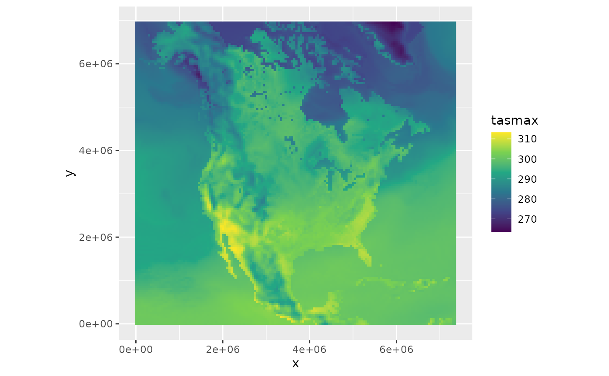

This is a basic function to support plotting of ncdfCF data
with the ggplot2 package. Specifically, this function creates a geo_ncdf
object which can be used like a geom_raster. The geom_ncdf takes a
CFVariable instance as its data. The CFVariable should be properly
pre-processed to make it suitable for plotting. The $subset() method is
well suited for this task. Note that currently only map plotting works, e.g.
the CFVariable should have X and Y axes.
Arguments
- mapping
As in geom_raster. If the argument is not provided, a mapping is constructed from the properties of the
dataargument, which is usually the right way.- data
A CFVariable instance. This will override any
datasetting of theggplot()function.- ...
Arguments passed on to
geom_raster().
Examples
library(ggplot2)
fn <- system.file("extdata", "tasmax_NAM-44_day_20410701-vncdfCF.nc", package = "ncdfCF")
ds <- open_ncdf(fn)
tasmax <- ds[["tasmax"]]
ggplot() + geom_ncdf(data = tasmax) + coord_equal() + scale_fill_viridis_c()
